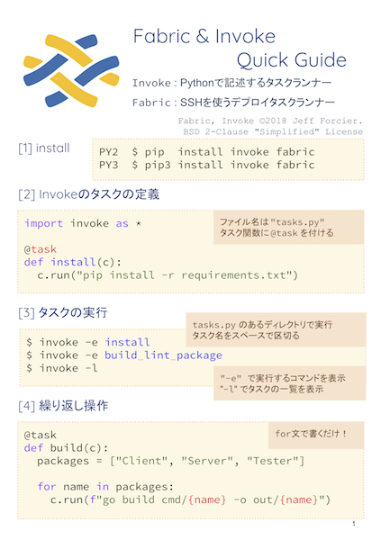

技術書典5お品書き
概要
- 2018.10.08 技術書典5 https://techbookfest.org/event/tbf05
- ブース: き21 https://techbookfest.org/event/tbf05/circle/28510001
- サークル名: 74th
無料配布

Fabric & Invoke Quick Guide
Fabricを使い始めるには十分すぎる小冊子。無料配布。
-
頒布価格:
- 冊子 無料
-
サイズ: A5/8ページ
-
著者: 74th(Golang)
-
目次・サンプル: PDF
新刊

- 頒布価格:
- 本+PDF 1,000円
- PDF 800円
- サイズ: A5/79ページ
- 著者: 74th
Fabricを使い倒す本。
- 目次・サンプル: PDF
既刊

- 頒布価格:
- 本+PDF 1,000円
- PDF 800円
- サイズ: A5/119ページ
- 著者: 74th(Golang)、こばたく(WebWorker)
Golangを選ぶからには信頼できる性能がほしい。
Golangで、性能を取りつつ構造化を図るとどの程度のコストがかかるのかを、実測して見極めて考える本。
Goルーチンを使い捨てにするとか、chanを戻り値にするとか、sync.Mutexを使うとか、Contextをリソース解放に使うとか、それらのコストを計測。
+WebWorkerでタスク並列化の有効性を検証する記事
- 目次・サンプル: PDF